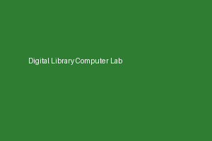

Welcome to CUI Library
The CUI Library provides robust access to millions of scholarly journals, books, research papers, and digital archives. We support students and faculty across all disciplines.
Explore our extensive collections, quiet study rooms, and modern computer labs designed for optimal research and collaborative learning.
Quick Highlights & Services
- 24/7 Digital Repository Access
- IEEE Xplore, ACM Digital Library, SpringerLink
- HIC Digital Thesis Archive
- Quiet Reading Halls & Discussion Rooms
- High-Speed Wi-Fi & Printing Services
Steps to Borrow a Book
- Search the online OPAC catalog for your required book.
- Note down the call number and shelf location.
- Present your valid Student ID Card at the circulation desk.
- Complete checkout for up to 14 days.
Here is some highlighted notice regarding library timings during examination weeks. Please note that overdue fines apply to delayed returns as per university policy.
Library Gallery & Tour
